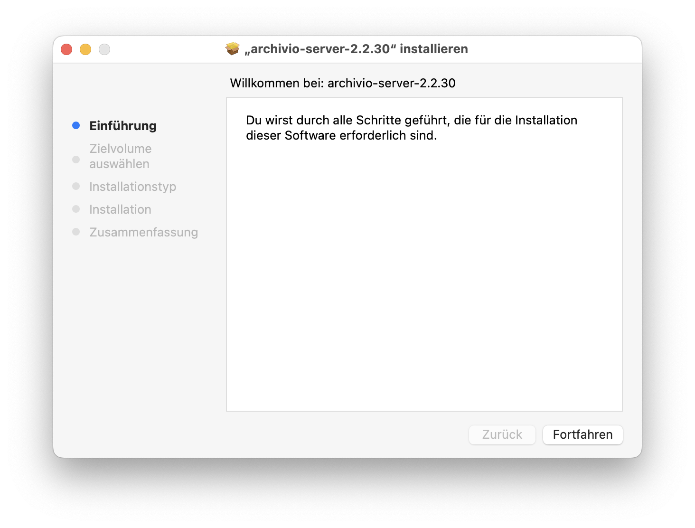
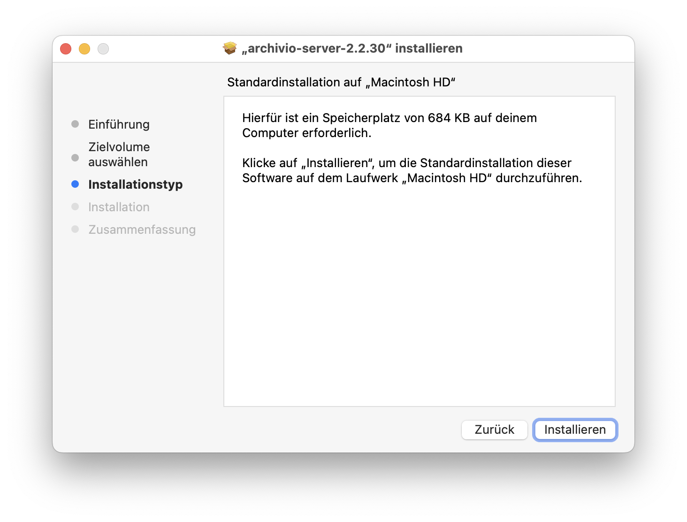
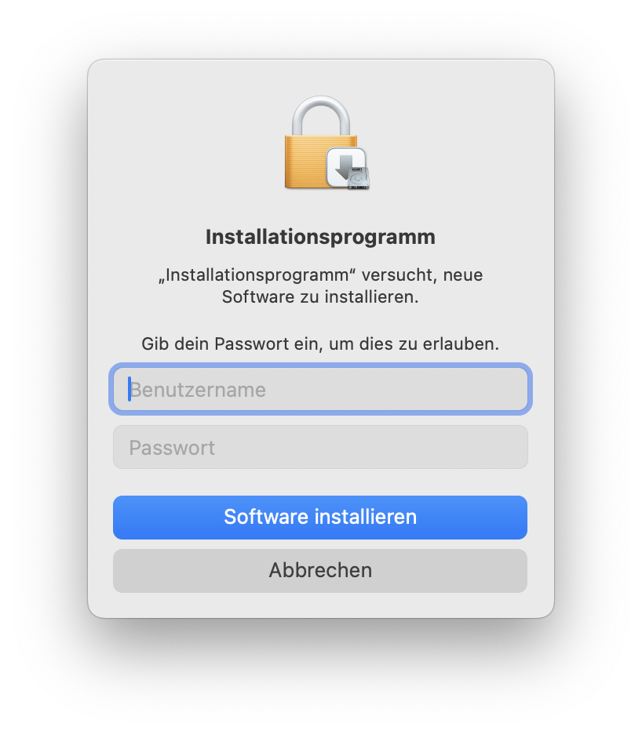
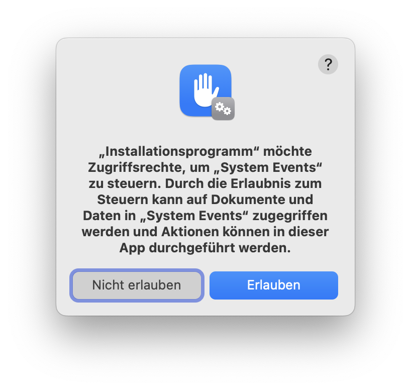
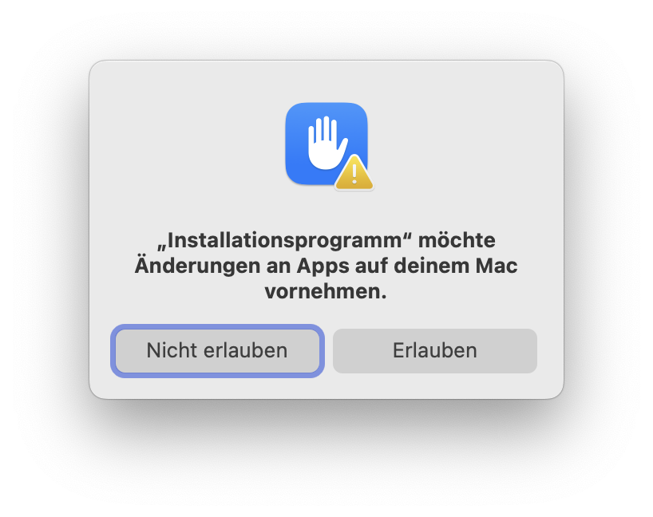
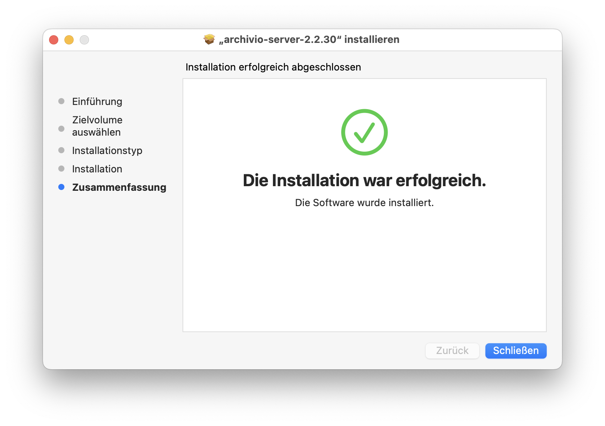
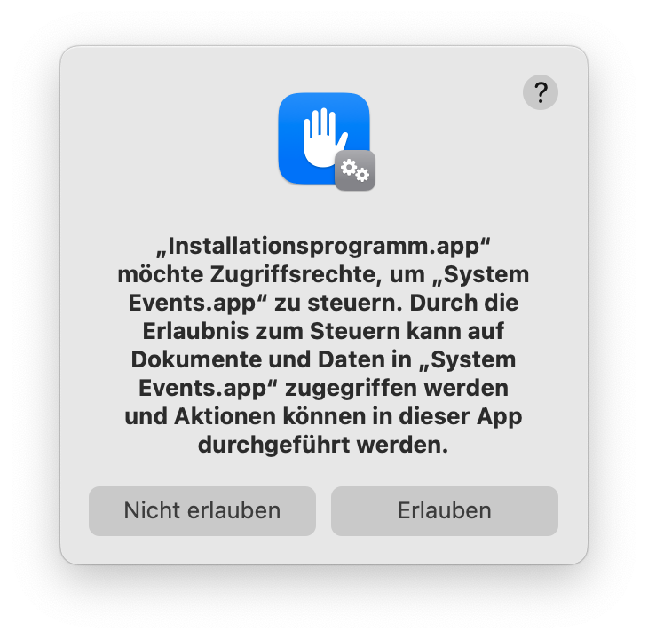

Installation
Archivio besteht aus zwei Teilen: dem Server, der auf einem fixen Mac (z. B. iMac) läuft, und dem optionalen Helper auf jedem Mitarbeiter-Mac.
Schritt 1 — Archivio Server installieren
- Doppelklick auf die heruntergeladene
.pkg-Datei — der Installer öffnet sich. - Auf Fortfahren und dann Installieren klicken.
- Mac-Passwort eingeben und auf Software installieren klicken.
- Zwei Berechtigungsdialoge erscheinen — jeweils Erlauben klicken.
- „Die Installation war erfolgreich" — auf Schließen klicken.






Berechtigungsdialoge beim ersten Start
Beim ersten Öffnen und beim ersten Scan erscheinen zwei Berechtigungsdialoge — jeweils Erlauben klicken.


Erster Start
Nach dem Start ist die Weboberfläche unter http://<Server-IP>:8000 erreichbar — z. B. http://192.168.1.10:8000.
Beim ersten Öffnen ist die Datenbank leer. Zuerst ein Projekt anlegen und den NAS-Ordner verknüpfen, dann einen ersten Scan starten.
NAS verknüpfen
Archivio liest Dateien direkt vom NAS. Das NAS muss auf dem Server-Mac eingehängt sein, bevor ein Scan läuft.
- Im Finder: Gehe zu → Mit Server verbinden (
⌘K) → NAS-Adresse eingeben → verbinden. - In der Archivio-Weboberfläche: Dashboard → Projekte → Neues Projekt.
- Projektname vergeben und den Pfad zum NAS-Ordner eintragen, z. B.
/Volumes/NAS/Projekte/2024. - Speichern → Scan starten.
Unterordner als Projekte
Unterordner eines bestehenden Projekts können als eigene Sub-Projekte geführt werden — mit separatem Scan, eigenem Filter und eigener Dokumentenliste.
- Im Dashboard die Browse-Ansicht des übergeordneten Projekts öffnen.
- Den gewünschten Unterordner anklicken — rechts erscheint das Detailpanel.
- Auf „Diesen Ordner als eigenes Projekt" klicken.
- Der Unterordner erscheint jetzt in der Projektliste und kann separat gescannt und durchsucht werden.
Ordner ignorieren
Temporäre Ordner, Papierkorb oder Archive können vom Scan ausgeschlossen werden. Die Steuerung erfolgt direkt in der Browse-Ansicht des Dashboards — keine Einstellungsseite nötig.
Einzelnen Ordner ignorieren
- Im Dashboard die Browse-Ansicht des Projekts öffnen und den Ordner anklicken.
- Im Detailpanel auf „Ignorieren" klicken.
- Der Ordner wird beim nächsten Scan übersprungen und in der Browse-Liste als ignoriert markiert.
Alle Ordner einer Ebene auf einmal ignorieren
- Einen beliebigen Ordner auf der gewünschten Ebene anklicken.
- Im Detailpanel auf „Alle Ordner auf dieser Ebene ignorieren" klicken und bestätigen.
- Alle Geschwister-Ordner werden auf einmal ausgeschlossen.
Ignorierung aufheben
Einen ignorierten Ordner anklicken — im Detailpanel erscheint „Ignorierung aufheben" (für diesen Ordner allein) oder „Alle Ordner auf dieser Ebene Ignorierung aufheben" (für alle Geschwister auf einmal).
Mitarbeiter-Macs einrichten
Der Archivio Helper läuft auf jedem Mitarbeiter-Mac als kleines Menüleisten-Icon. Er ermöglicht das Öffnen von Dateien direkt aus der Suchoberfläche.
- Auf dem Mitarbeiter-Mac die Archivio-Weboberfläche öffnen:
http://<Server-IP>:8000. - Unter Einstellungen → ganz unten, Abschnitt „Archivio Helper": Helper herunterladen → heruntergeladene
.pkg-Datei doppelklicken und den Installer-Anweisungen folgen (Admin-Passwort nötig). - Die App landet dabei automatisch für alle Benutzer des Macs in Programme — wichtig, wenn mehrere Accounts denselben Mac nutzen.
- Der Helper findet den Server normalerweise automatisch im Netzwerk. Falls nicht: im Helper-Menü unter „Server suchen" oder „Server ändern" die URL manuell eintragen (dieselbe URL wie für die Weboberfläche).
- „Autostart beim Login" ist standardmässig aktiviert.
Ab jetzt erscheinen in den Suchergebnissen „Öffnen"- und „Im Finder zeigen"-Buttons, die Dateien direkt auf dem Mitarbeiter-Mac öffnen.
Archivio-Link kopieren
Server und Helper installieren automatisch eine Finder-Schnellaktion. Damit lässt sich jede Datei mit einem Klick als Link teilen — z. B. per Mail oder Chat — den jede Person mit installiertem Archivio Helper direkt öffnen kann, ohne selbst im NAS-Ordner danach suchen zu müssen.
- Datei im Finder mit Rechtsklick auswählen.
- Schnellaktionen (bzw. Quick Actions) → „Archivio-Link kopieren".
- Link ist in der Zwischenablage — z. B. in eine Mail oder einen Chat einfügen.
- Empfänger:in mit installiertem Archivio Helper klickt den Link → die Datei öffnet sich sofort bzw. wird im Finder angezeigt — je nachdem, was sie selbst im eigenen Helper-/Server-Menü unter „Archivio-Links: Direkt öffnen"/„Zum Pfad gehen" eingestellt hat.
Claude Desktop verbinden (MCP)
Mit installiertem Helper kann Claude Desktop direkt auf Archivio zugreifen — Dokumente und Mails durchsuchen, Inhalte zum Zusammenfassen oder Umschreiben laden, Dateien öffnen. Vollständig lokal: die Anfragen laufen nur zwischen Claude Desktop, dem Helper und dem Archivio Server im Büronetz.
- Archivio Helper installieren und starten (siehe oben) — er trägt sich damit automatisch bei Claude Desktop ein. Keine manuelle Konfiguration, kein Connector-Store nötig.
- Im Helper-Menü prüfen, dass die Server-URL korrekt gesetzt ist (dieselbe URL wie für die Weboberfläche).
- Claude Desktop neu starten, damit die Verbindung aktiv wird.
Danach ist Archivio in Claude als Werkzeug verfügbar — einfach danach fragen, z. B.: „Suche in Archivio nach dem Projekt Keller und zeig mir die aktuelle Visualisierung für Attika Event".
Claude wählt selbst das passende Werkzeug:
- Suchen — Volltext-, Dateinamen- und Ordnersuche.
- KI-Suche — findet auch sinngemässe Treffer, die die Volltextsuche verpasst.
- Inhalt lesen — lädt ein Dokument (z. B. eine Mail) als Text in die Unterhaltung, damit Claude ihn direkt zusammenfassen, umschreiben oder übersetzen kann.
- Datei öffnen / im Finder zeigen — öffnet Bilder, Pläne oder PDFs direkt in der zugehörigen App auf dem Mac.
Suche
Die Volltextsuche findet Inhalte in PDFs, Word-Dokumenten, E-Mails und weiteren Formaten. Die Suche unterstützt:
- Einzelwörter —
Brandschutz - Phrasen —
"Technischer Bericht" - Mehrere Begriffe — alle eingegebenen Wörter müssen vorkommen
Suchbereich einschränken
Unterhalb des Suchfelds stehen drei Scope-Buttons, die festlegen, wo gesucht wird:
- Dokumente — durchsucht den vollständigen Textinhalt aller indizierten Dokumente (Standard).
- Ordnernamen — sucht ausschliesslich in den Ordnernamen auf dem NAS. Nützlich um Projekte oder Ablageorte schnell zu finden.
- Dateinamen — sucht ausschliesslich im Dateinamen. Nur Dateien, deren Name den Begriff enthält, werden angezeigt — Dokumente, die den Begriff nur im Inhalt haben, werden nicht gelistet.
Mehrere Bereiche können gleichzeitig aktiv sein. Über die weiteren Filter lässt sich die Suche zusätzlich auf bestimmte Projekte, Dateitypen oder Zeiträume einschränken.
KI-Suche aktivieren
Die KI-Suche beantwortet Fragen auf Basis der indizierten Dokumente — ohne Cloud, vollständig lokal. Als Grundlage dient Ollama, ein kostenloses, lokales Sprachmodell.
Ollama installieren
Beim ersten Öffnen von Archivio erscheint eine Karte im Dashboard, falls Ollama noch nicht installiert ist:
- Im Dashboard die Karte „KI-Suche einrichten" anklicken — Jetzt installieren wählen.
- Archivio lädt Ollama automatisch herunter und installiert es. Der Fortschritt wird direkt angezeigt.
- Nach erfolgreicher Installation: Archivio Server neu starten (Menüleisten-Icon → Beenden → wieder öffnen).
- Archivio lädt das Sprachmodell beim ersten Start automatisch — das kann einige Minuten dauern.
Manuelle Installation
Alternativ lässt sich Ollama per Terminal installieren. Das Programm Terminal öffnen, folgenden Befehl reinkopieren und mit Enter bestätigen:
curl -fsSL https://ollama.com/install.sh | sh
Danach Archivio Server neu starten.
KI-Suche verwenden
Im Suchfeld oben den Tab „KI-Suche" wählen und eine Frage in ganzen Sätzen stellen, z. B.: „Welche Anforderungen gelten für den Brandschutz im Treppenhaus?"
Archivio sucht die relevantesten Textstellen und formuliert eine Antwort mit Quellenangaben.
Automatischer Scan
Damit neue Dateien auf dem NAS automatisch gefunden werden, kann ein täglicher Scan eingerichtet werden.
- Dashboard → Einstellungen öffnen.
- Im Abschnitt „Automatischer Scan" eine Uhrzeit eintragen, z. B.
02:00. - Speichern. Der Scan läuft täglich zur eingestellten Zeit — vorausgesetzt, der Server läuft.